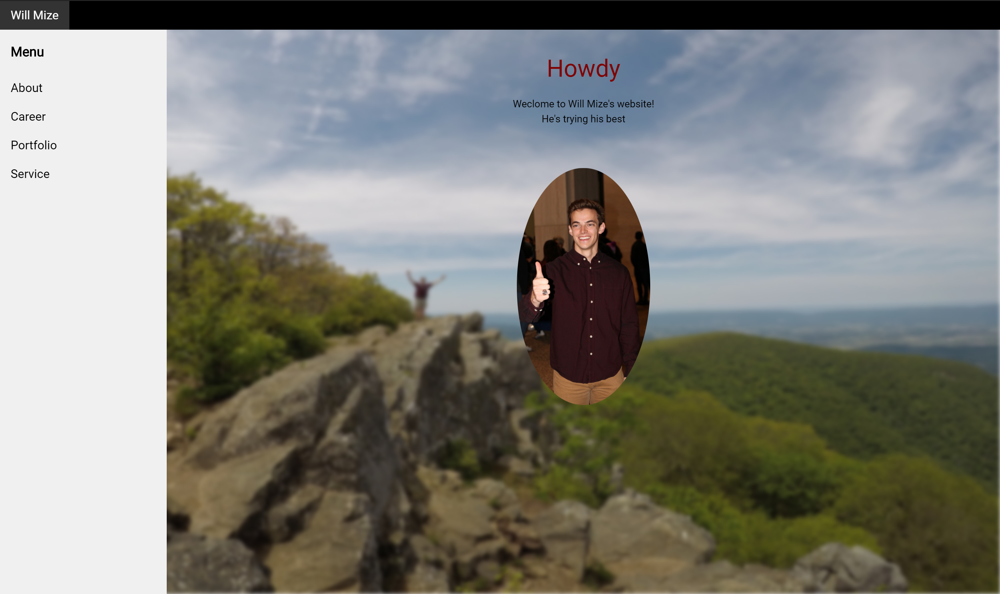

Portfolio


HD Map Verification
Project Overview: For my senior capstone project, I was placed on the 12th Unmanned Team:
Texas A&M’s team for the GM/SAE Autodrive Challenge. Here, I worked with a group of three,
where we were tasked with the creation of an HD map verification system, to ensure that the
maps used by the autonomous vehicle's system are as up to date as possible.
My Role: Team Leader, UI Development, & User Surveys
Languages: React & HTML
Tools: Jira, Github, & Electron
Trail Rater
Project Overview: The Trail Rater device aims to inform hikers of the most recent trail conditions.
The concept is that these small kiosk-like devices would be placed throughout trails. When they were interacted
with, they would update a website and a trailhead map that could be referenced by others. The
prototype was built out of corrugated plastic and a Rasberry Pi used to allow for communication
between the device and a website.
My Role: Team Leader, Website Development, Prototype Development
Languages: HTML & Javascript
Tools: Github & Raspberry Pi Zero
SWE Inventory Tracker
Project Overview: The main objective of this project was to provide an inventory tracking
system that would allow the organization's officers to check out and return items for events
and for the system administrator to view and manage inventory and storage unit keys across officers.
My Role: Scrum Master, Full-Stack Development, & Testing
Languages: Ruby on Rails, RSpec, & JavaScript
Tools: Jira, GitHub, & Heroku
Your Family Manager
Project Overview: The Family Manager website aims to combine four important family-oriented
features in one convenient location. The goal of the product is to provide a family with a
personalized page that can be accessed by any member sharing a group account. One the page they will
have the ability to track one another’s locations, access a group calendar to stay
up to date with family events, view/edit/create to-do lists, and view photos uploaded to a
photos album to be easily shared and downloaded by everyone.
My Role: Scrum Master & Full-Stack Development
Languages: PHP, HTML, Javascript, Bootstrap, & MySQL
Tools: Jira, GitHub, Google APIs, & AWS
This Website
This website was built using HTML, CSS, and Javascript. It is being hosted through an AWS S3 bucket and being delivered with Cloudfront. The navigation bar and other templating help was learned using W3Schools' tutorials.
